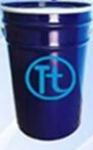
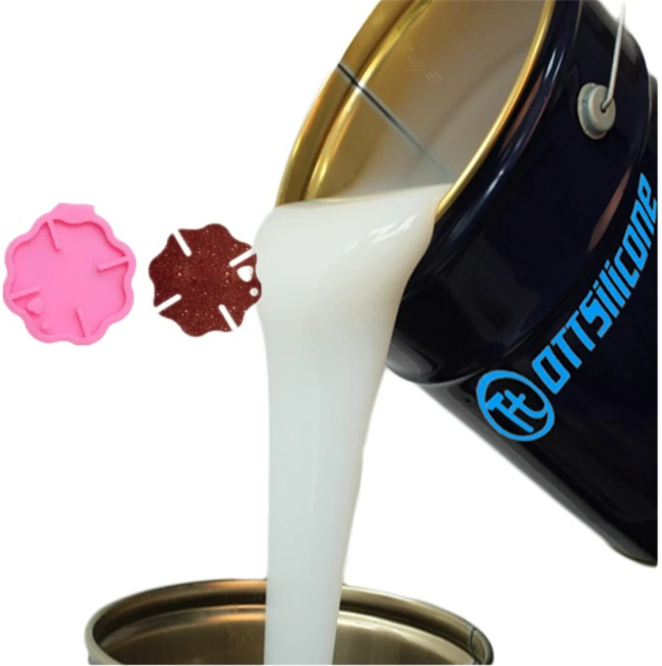
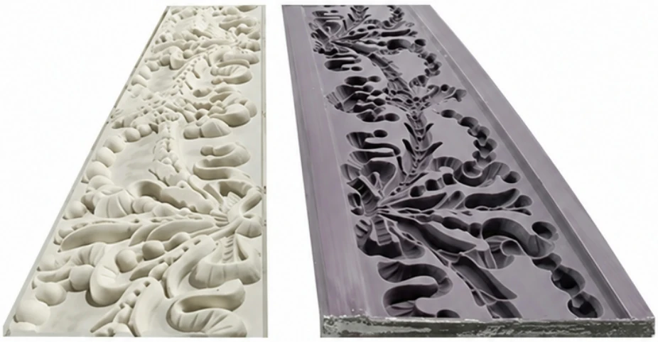

SILICONA PARA MOLDES
Reproduce cada detalle.
Silicona blanca RTV-2 para fabricar moldes y reproducir piezas de yeso decorativo, cerámica en frío y prototipos de suelas.

NOSOTROS
Especialistas en silicona para moldes
En NEW SILICONE comercializamos silicona blanca RTV-2 para la fabricación de moldes. Atendemos a emprendedores, talleres y empresas que fabrican sus propios moldes.
Cuéntanos qué pieza quieres reproducir y qué cantidad necesitas para preparar tu cotización.
PRODUCTOS
Silicona blanca RTV-2



Especificaciones técnicas
- Modelo
- S720
- Presentación
- Balde de 25 kg
- Color
- Blanco
- Tipo
- Dos componentes
- Dureza
- 20 Shore A
- Proporción A:B
- 100:3
- Viscosidad
- 7 500 mPa·s
- Tiempo de trabajo
- 10 min
- Tiempo de curado
- 1 h
- Resistencia al desgarro
- 12,6 kN/m
- Resistencia a la tracción
- 2,9 MPa
- Elongación
- 362 %
- Contracción
- 0,2 %
Valores típicos según la ficha S720 del fabricante, a 25 °C.
Cotizar este productoAplicaciones
Yeso decorativo
Para crear moldes de figuras, adornos y recuerdos en yeso.
Cerámica en frío
Para reproducir motivos decorativos y piezas artesanales.
Calzado
Para fabricar moldes de prototipos y muestras de suelas.
CONTÁCTENOS
Cotiza para tu próximo proyecto
Escríbenos para consultar precio y disponibilidad. Puedes adjuntar una foto de la pieza en el chat.
Chatea con nosotros Dirección legal Mza. 04, Lote 06, Urb. Flores 78 San Juan de Lurigancho, Lima